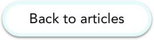

Lighting
Lighting is a detrimental part of photography, the moods you want to create and the sort of image you’d like to create. The techniques and angles of lighting are just as important.
There are a lot of different techniques, below are 8 different techniques:
- Flat light
- Broad Light
- Short Light
- Split Light
- Back Light
- Rim Light
- Butterfly Light
- Loop Light
There are also different types of light:
- Daylight
- Photoflood lights
- Incandescent lighting
- Fluorescent lighting
- Sodium discharge street lighting
- Photographic flash
A lot of different different lights can be exploited such as lightning, electric sparks, fireworks, moonlight and other light sources.
